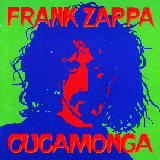

Заппа'zУх!Ой!
русский более или менее регулярный бюллетень для поклонников американского композитора
Frank'а Vincent'а Zappa'ы
Выпуск.1 (15 апреля 1998)
Кукамонга раз, Кукамонга два, Кукамонга три! Морская фигура замри?
Знающий народ утверждает, что судясь и рядясь, борясь всю свою жизнь за право художника распоряжаться плодами собственного вдохновения, Фрэнк Заппа последовательно лишил все, некогда эксплуатировавшие его компании звукозаписи, прав на свои произведения, альбомы, пьесы и просто песенки.
В общем и целом, примерно так оно и есть. За естественным исключением фильма 200 MOTELS, права на звуковую дорожку к которому принадлежат MGM (как-то Calvin Schenkel объяснял мне почему то, что попало в Голливуд, то пропало, но я, признаться, не был в тот момент внимателен:-(( судьба всего прочего, созданного мастером за тридцать лет ежедневной работы, ныне в руках его семьи, Zappa Family Trust.
Казалось бы, и замечательно. Закидают теперь "правильными", сообразно воле и желаньям усопшего смикшированными, выстроенными и упакованными альбомами. Однако, за последние пару лет одни лишь переиздания, да компиляции. Обещанный осенью Everything Is Healing Nicely, осенью же и отменен. Сушь на фанатском барометре, великая сушь.
Ну, а когда линкоры в гавани, а крейсера болтаются на якорях, то и рыбацкие истории, пиратские рассказы одноглазых шкиперов, будят воображение и радуют душу. Иными словами, оказывается, не все-таки к рукам успел прибрать экспроприатор экспроприаторов FZ, права на ранние, "до-Материнские" вещи, проданные голодным юношей Del-Fi (она же Donna) и Original Sound, и по сей день собственность этих самых компаний. А значит, никакие родственники не могут помешать нынешним хозяевам собрать дюжину незатейливых A и B сторон наивного начала шестидесятых и тиснуть компактик с грехами молодости нашего кумира. Пластиночку выпустить с названием Cucamonga.
Да, друзья, памяти того самого городишки, о котором и песенка сложена, и помещена в альбомчик Bongo Fury.
Out in Cucamonga
Many years ago
Near a Holy Roller Church
There was once a place
Where me and a couple of friends
Began practicing for the time
We might go
On TV
Там, там в пригороде L.A. у дороги стояла студия бывшего морского электрика Paul'а Buff'а и за червонец всяк вошедший мог записать doo-wop'чик, блюзик или же непристойную частушку. Что, собственно, и делал наш кумир в обществе мужчин, ныне собственный homepage имеющих David Aerni и не имеющих - Ray Collins. Разминал, так сказать, пальцы, пробовал силы. Учился с шоу-бизнесом воевать на его собственном поле.
На самом деле, это уже третье явление доисторического материала народу.
Впервые свои законным правом похлебать из корытца чужого успеха компания Del-Fi Records воспользовалась еще в 1983, когда издала виниловый кругляш с названием Rare Meat. Тогда диск включал ровно шесть композиций, сочиненных, исполненных или на худой конец продюссированных FZ.
Некоторое время спустя материал был лицензирован предприимчивым японцам, которые выпустили тридцатиминутный сидючoк, Cucamonga Years - The Early Works of Frank Zappa, дополнив его незабвенным творением тандема Заппа/Коллинз: песенкой Memories of El Monte и веселенькой белибердой самого Пола Буффа и Дэвида Эрни, к Фрэнку прямого отношения не имеющей, но чрезвычайно интересной в смысле культурного контекста, прорывающегося веселеньким surf-ритмом, например, в неувядаемой Nasal Retentive Calliope Music альбома Матерей We're Only In It For The Money
|
 |
Новый, свеженький (февральский 1998) вариант от Del-Fi, вновь лишился Memories, а также The World's Greatest Sinner, зато еще более обогатился культурно-контекстной чешуей в виде песенок Пола Буффа - Cathy, My Angel и 'Til Septembers. Все вместе - такая жутковатая на вид штука с красно-зеленой обложкой называется Cucamonga - Frank's Wild Years. Этакий рак, вареное членистоногое, на общем безрыбье. |
Кстати, оба взаимодополняющих диска мирно сосуществуют в текущем каталоге CDnow. Новехонький американский Cucamonga всего за 11 с копейками и гордый самурайский неприступный Cucamonga Years за 27 USD почти что. Но я бы, конечно, посоветовал потратиться.
Все лучше, чем намечающийся на конец апреля очередной сборничек Cheap Thrills.
Искренне Ваш, Владимир Советов
http://www.arf.ru/
| Домой | Заппа'zУх!Ой! | Поиск | Хозяин |